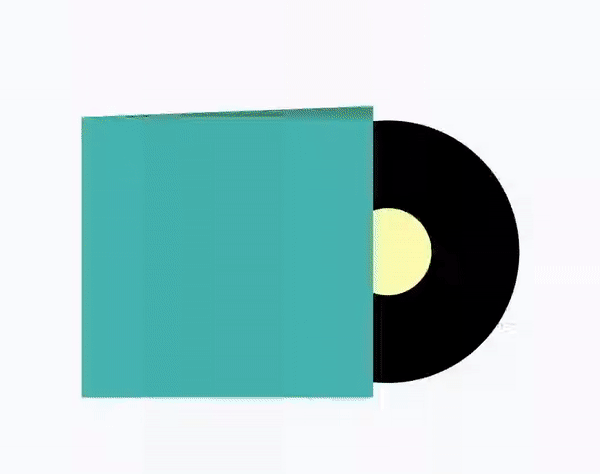

Introduction
Being professional Android developer for many years, things which were always difficult to me are animations, colors and dimensions — basically all the UI/UX stuff. I can’t describe or easily understand what good colors can be used, how to implement this or that animation and so on. Though we’re waiting for MotionLayout for quite long time (and Android Studio 4.0) I took some time to play with it. And I should say that experience (even without Motion Editor) was much better than I expected.
Instead of trying to come up with some simple animation example, or trying to invent something complex but not useful, I decided to go to dribbble and find something there. One animation which took my attention was animated Vinyls music player and especially pager-like animation of covers and vinyl disks on page scroll. Music Player - Vinyls
As mentioned above, I’m not that good at animations, so I tried to make some simplified version without images, not exact animations, but keep the concept.
Implementation
First of all we need to setup MotionLayout. For this I recommend to complete codelab: Advanced Android in Kotlin 03.2: Animation with MotionLayout
We’ll have ViewPager with many fragments inside. Each fragment will contain MotionLayout with two views: cover and disk. Xml for fragment will be as simple as:
<?xml version="1.0" encoding="utf-8"?>
<androidx.constraintlayout.motion.widget.MotionLayout xmlns:android="http://schemas.android.com/apk/res/android"
xmlns:app="http://schemas.android.com/apk/res-auto"
android:id="@+id/motionLayout"
android:layout_width="match_parent"
android:layout_height="match_parent"
android:paddingTop="100dp"
app:layoutDescription="@xml/motion_scene">
<View
android:id="@+id/disk"
android:layout_width="@dimen/disk_size"
android:layout_height="@dimen/disk_size"
android:background="@drawable/disk" />
<by.krossovochkin.vinylmotionlayoutsample.CoverView
android:id="@+id/cover"
android:layout_width="@dimen/cover_size"
android:layout_height="@dimen/cover_size" />
</androidx.constraintlayout.motion.widget.MotionLayout>
Next when we go to the motion scene we need to define our key points:
-
start: this is frame 0, which will be related to the fully-opened fragment page. On this frame we’ll have disk which is partially visible from the cover
-
end: this is frame 100, which will be related to the fully closed fragment page. On this frame we’ll have disk not visible (inside cover)
-
mid: this is frame somewhere in betweed (closer to the start), where we’ll define positions for disk and cover to make feeling that cover and disk go in front of each other (compensating ViewPager scroll).
So, we define start as start constraint set:
<ConstraintSet android:id="@+id/start">
<Constraint
android:id="@+id/cover"
android:layout_width="@dimen/cover_size"
android:layout_height="@dimen/cover_size"
android:translationX="@dimen/cover_offset_start"
app:layout_constraintEnd_toEndOf="parent"
app:layout_constraintStart_toStartOf="parent"
app:layout_constraintTop_toTopOf="parent" />
<Constraint
android:id="@+id/disk"
android:layout_width="@dimen/disk_size"
android:layout_height="@dimen/disk_size"
android:translationX="@dimen/disk_offset_start"
app:layout_constraintBottom_toBottomOf="@+id/cover"
app:layout_constraintStart_toStartOf="@+id/cover"
app:layout_constraintTop_toTopOf="@+id/cover" />
</ConstraintSet>
For end we’ll define end constraint set:
<ConstraintSet android:id="@+id/end">
<Constraint
android:id="@+id/cover"
android:layout_width="@dimen/cover_size"
android:layout_height="@dimen/cover_size"
android:translationX="@dimen/cover_offset_end"
app:layout_constraintEnd_toEndOf="parent"
app:layout_constraintStart_toStartOf="parent"
app:layout_constraintTop_toTopOf="parent" />
<Constraint
android:id="@+id/disk"
android:layout_width="@dimen/disk_size"
android:layout_height="@dimen/disk_size"
android:translationX="@dimen/disk_offset_end"
app:layout_constraintBottom_toBottomOf="@+id/cover"
app:layout_constraintStart_toStartOf="@+id/cover"
app:layout_constraintTop_toTopOf="@+id/cover" />
</ConstraintSet>
And inside Transition we’ll define mid key point:
<Transition
app:constraintSetEnd="@+id/end"
app:constraintSetStart="@+id/start"
app:duration="1000">
<KeyFrameSet>
<KeyAttribute
android:translationX="@dimen/disk_offset_mid"
app:framePosition="20"
app:motionTarget="@+id/disk" />
<KeyAttribute
android:translationX="@dimen/cover_offset_mid"
app:framePosition="20"
app:motionTarget="@+id/cover" />
</KeyFrameSet>
</Transition>
As simple as that. It requires some time to tweak some values to make it look good, but besides that it is pretty simple and straightforward.
Final thing is to connect MotionLayout with ViewPager. It would require some callbacks-magic, but essentially it ends up like:
override fun onPageScrolled(
position: Int,
positionOffset: Float,
positionOffsetPixels: Int
) {
motionLayout.progress = positionOffset
}
Result
And here is the result* (as usual, sorry for video-artifacts. Can’t make emulator to record video without them)*:

One can take a look at the Github repository for full code.
Conclusion
I should say that it definitely was fun to play with MotionLayout. And implementing some custom animation (with connecting to ViewPager) was simple and straightforward. I’d say that API (XML) looks weird and has a lot of duplication (it could be more straightforward to add all the needed animations for given object I think, than define separately constraints and keypoints and inside attributes etc.) And for such person as me, who is not that good at animations, colors etc. I think MotionLayout is a good addition.